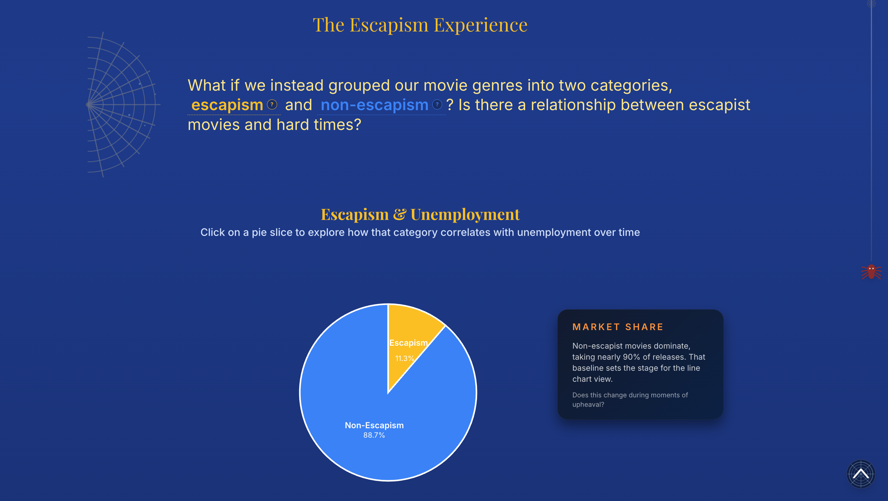
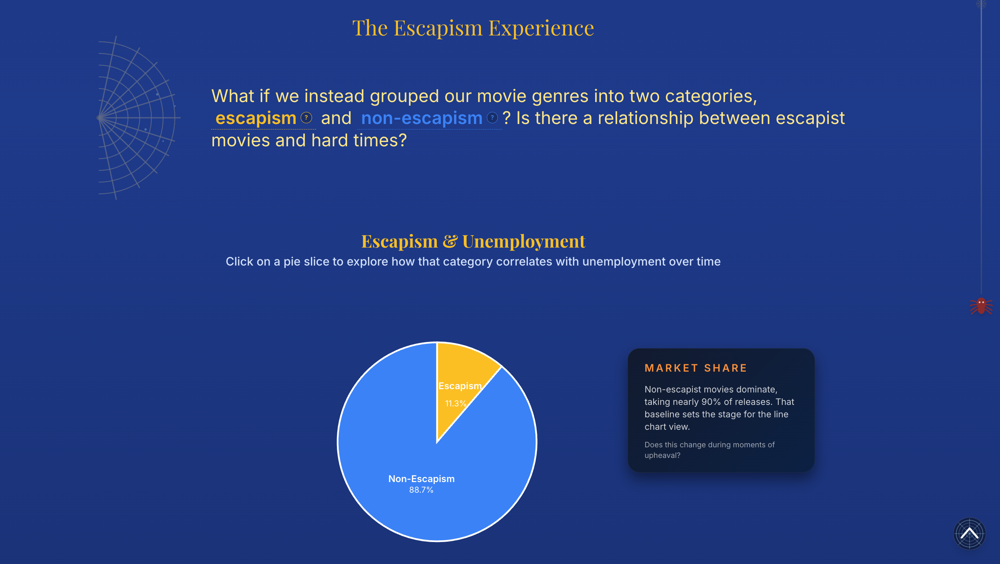

Past, Present, Projection: How Movies Reflect the World
A data visualization project on how film genres reflect economic trends.
The Problem and Motivation
Inspired by recent online trends that have highlighted certain products (such as Labubus and lipsticks) as "recession indicators," we decided to research whether entertainment itself could also serve as an economic indicator.
We found that during the COVID-19 pandemic, audiences were most interested in superhero and action movies, leading us to ask our fundamental question: Does the world tend to watch certain genres during devastating times, such as periods of economic hardship?
My Role and Contributions
This project was a collaborative effort where we all contributed equally to the process and worked on the same tasks during the early stages of the project which involved data analysis, sketching visualizations, and storyboarding.
As we moved into the development phase, I took on the role of designing the overall look and feel of the website, as well as implementing some of the visualizations using D3.js and React. I was responsible for creating the (non-visualization) interactive elements that would be used throughout the website, including any animations. I also worked on optimizing the performance of the visualizations to ensure a smooth user experience.
From Data to insights
We began by analyzing datasets that provided information regarding global indicators such as unemployment rates and economic freedom indices, as well as movie statistics such as popularity ratings, genre categorizations, and box office revenues.
I focused on finding patterns between unemployment rates in the United States and the most popular genres in the domestic market, as well as the popularity of these genres on a global scale, using countries' economic freedom indices.
Creating the Storyline
Once we decided what type of visualizations we wanted to create, we began crafting the narrative. After hours of storyboarding and testing different approaches, we chose to tell the story of the insights we ourselves had gained through our research.
While we had initially theorized that the popularity of general genres such as drama, romance, action, and horror would best mirror the changing state of the economy, we found that the economy was more accurately represented by the popularity and production of movies that fell into two categories: escapism and non-escapism.
Thus, we would begin with visualizations analyzing trends seen across different genres and then redirect our focus to the correlations between the economy and escapism.
 

Visualizing the Website
When creating the website, I wanted to integrate film elements and transitions that were cinematic and contributed to a scrollytelling experience.
Reflecting our visualizations' key feature of being timelines from 1995 to 2024, I designed an evolving website that mimicked the journey of movies through time.
The color palette was inspired by the movie presented in our hook, Spider-Man: No Way Home (2021), featuring deep blues, strong reds, and bright ambers.
section in progress...